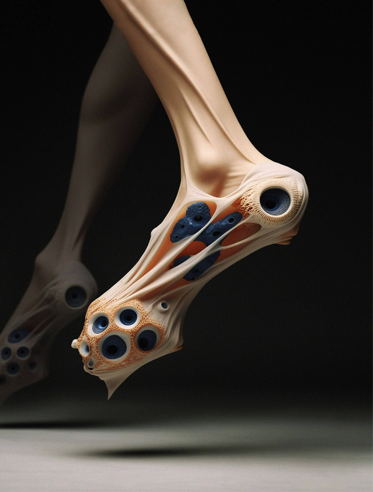
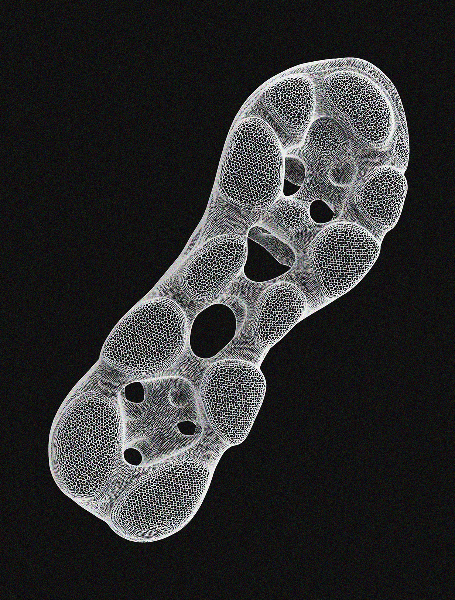
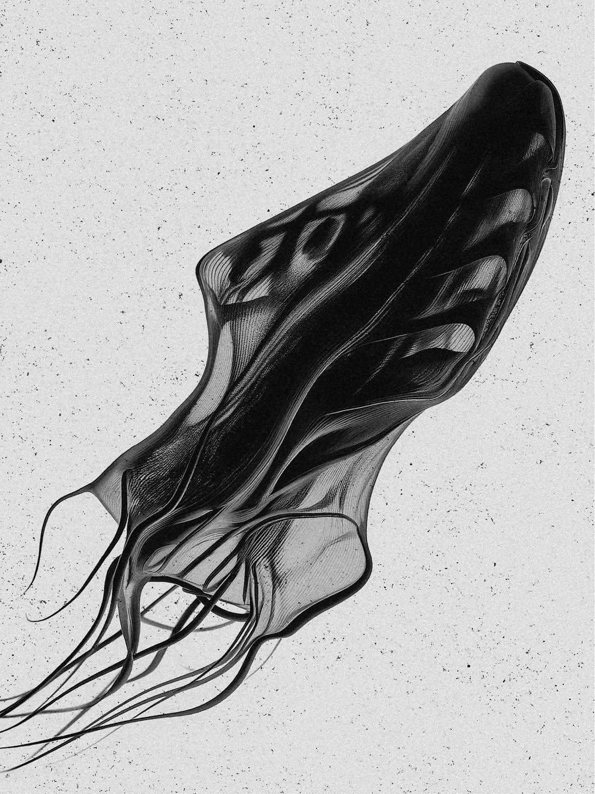
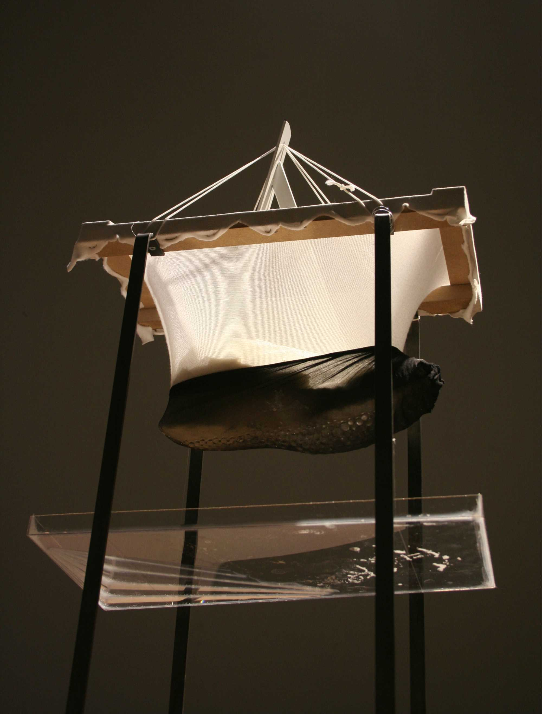
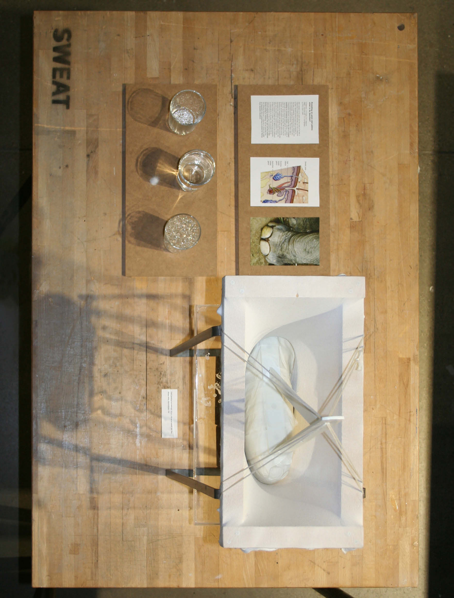
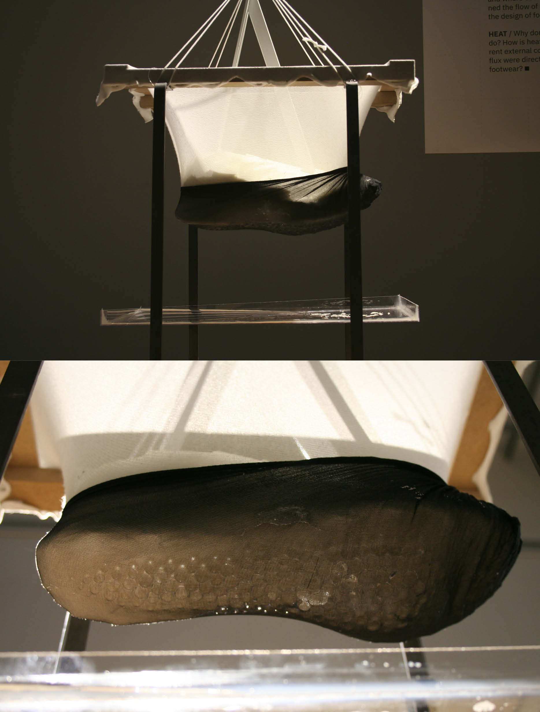
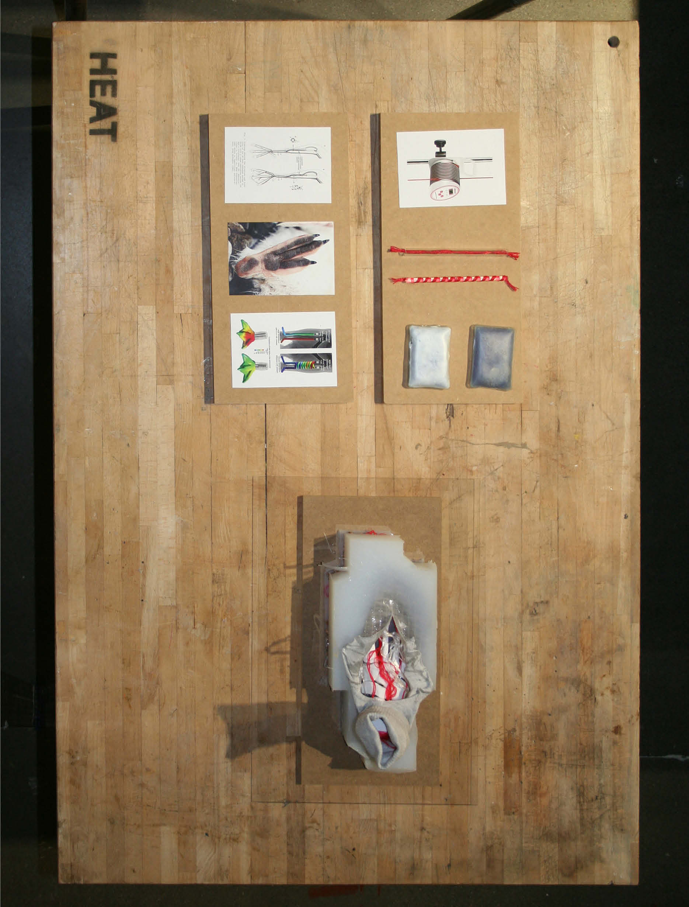
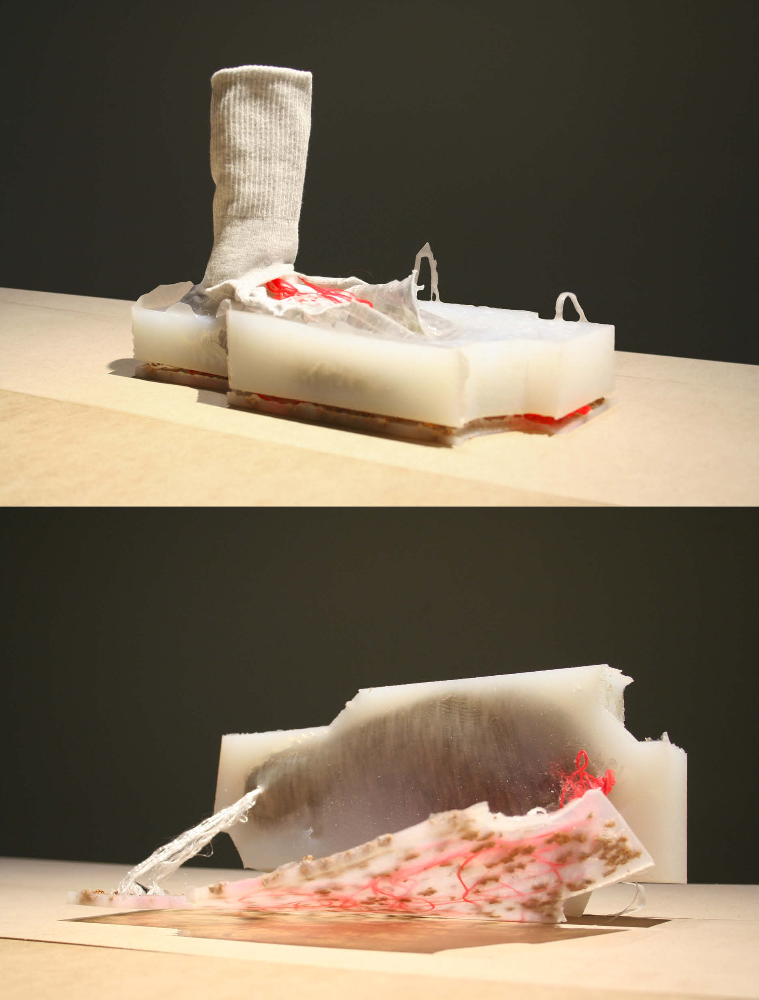

04 / 20XX
Hyper
Species
Exploring futures of becoming, beyond human. A framework on how bodies and environments exchange and adapt, through biology, craft, and technology.
- Year
- 20XX
- Context
- Personal project
- Practice
- Creative design exploration, Ecoliteracy principles, Speculative design, Design fiction, Future studies, Innovation design, Design ecologies, New materialism, Bioethics, Narrative prototyping



Heat & Sweat
Dealing with sweat and heat regulation on the feet: Starting point for potential concepts.
Two scopes: the deliberate transport, absorption and release of foot sweat, and the exchange of heat between the foot and the changing surfaces on site.


On average, our feet produce about 250 ml of sweat per day. What happens to this fluid, and where does it go? What if we carefully examined the flow of foot sweat and incorporated it into the design of footwear?

The sweat reacts with a special hyper-absorbent and expanding material that absorbs the sweat. A stretched fabric layer inside the shoe becomes the carrier of moisture. The fluid is then released again when required.

Why don't penguins' feet freeze while ours do? How is heat regulated in the feet under different external conditions? What if the body's heat flux were directly integrated into the design of footwear?

Advanced regulation of temperature can be achieved in two ways: Either by external supply of energy through intelligent materials or by using the body's own heat. The extension of the blood flow is like a blood warmer, as used in medicine today.